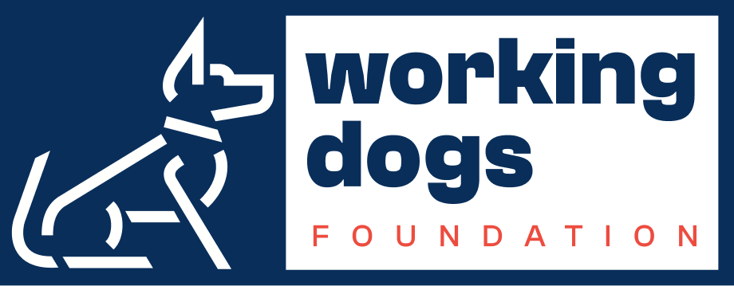

Working Dogs Foundation
Mapa schronisk dla zwierząt i działań WDF
Make this Notebook Trusted to load map: File -> Trust Notebook
Statystyki działań prowadzonych przez WDF
#Adopsiaki
Warsztaty
Dog Friendly Company i regularni darczyńcy
Społeczność